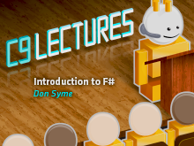
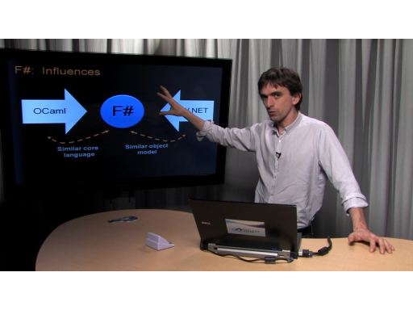
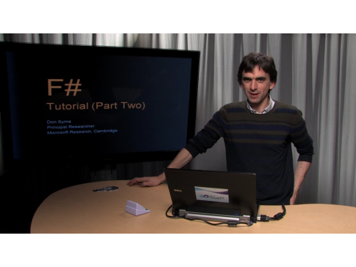
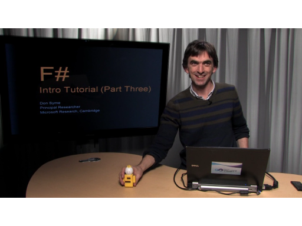

Dr. Don Syme is a principal researcher in MSR Cambridge. He has a rich history in programming language research, design, and implementation (C# generics being one of his most recognized implementation…
C9 Lectures: Dr. Don Syme - Introduction to F#, 1 of 3[WMV] [2010/02/05]F# is Microsoft's first functional programming language to be included as one of Visual Studio's official set of languages. F# is a succinct, efficient, expressivefunctional/object-oriented programmin…
C9 Lectures: Dr. Don Syme - Introduction to F#, 2 of 3[WMV] [2010/02/12]F# is Microsoft's first functional programming language to be included as one of Visual Studio's official set of languages. F# is a succinct, efficient, expressive functional/object-oriented programmi…
C9 Lectures: Dr. Don Syme - Introduction to F#, 3 of 3[WMV] [2010/02/19]F# is Microsoft's first functional programming language to be included as one of Visual Studio's official set of languages. F# is a succinct, efficient, expressivefunctional/object-oriented programmin…